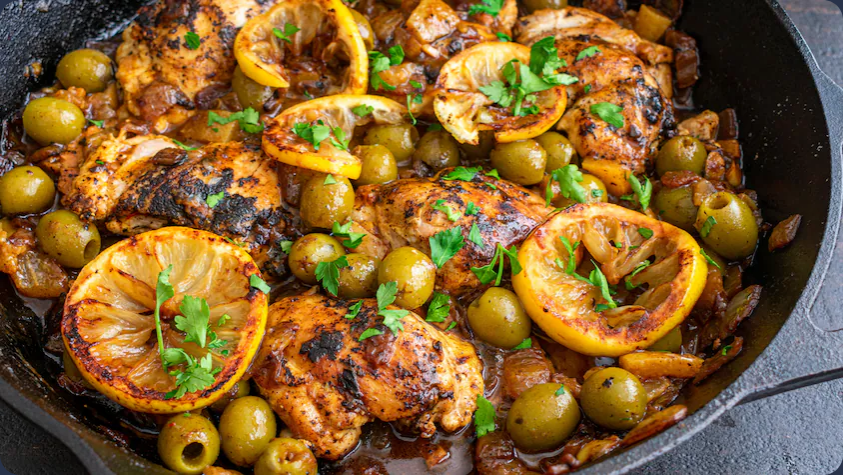

Home
Chicken and olvies (poulet aux olives)

Desription
This is a classic algerian dish that will make everyone happy at dinner
As you will see, this dish is not complicated to make and there is not a lot of preperation time
Ingredients
- 6 chicken breasts
- Extra virgin olive oil
- 2 smalls onions, diced
- 2 garlic cloves, diced
- 2 tbsp ginger, diced
- safron to taste
- 2 lemons cut into quaters
- 2 cups of green olives
- 5 cups of chicken stock
- coriander to taste, diced
- 2 tbsp of Ras-el-hanout, diced
Steps
- Marinate for 6 hours the chicken with the olive oil, the onions, the garlic the ginger, the ras-el-hanout
and the safron
- Wash the olives to remove the salt
- In a big casserole, cook on medium heat the chiken breast until browned
- Add the marinate and cook a few minutes
- Add the chicken stock, the lemons and the olives
- Bring to a boil, reduce the heat and cook for 15 to 20 minutes coverd
- Remove the cover and cook another 20 minutes
- Add the coriander, salt and peper